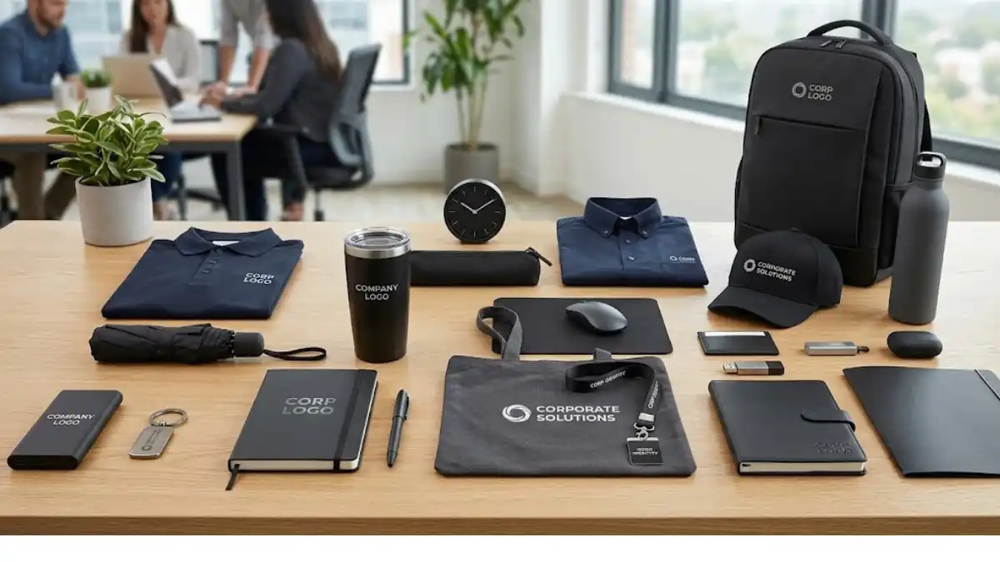

Palet warna ini juga cenderung tidak lekang oleh tren, sehingga merchandise tetap terlihat relevan dan profesional meskipun dipakai dalam jangka waktu lama.
Selain faktor estetika, warna monokrom juga memudahkan perusahaan menjaga konsistensi visual antar produk, terutama jika merchandise terdiri dari beberapa jenis barang berbeda yang dibagikan dalam satu paket.
Mengapa Merchandise Monokrom Cocok untuk Kesan Profesional?
Warna monokrom secara visual memberikan kesan rapi, tegas, dan tidak berlebihan, sehingga sering dipilih untuk merchandise yang ditujukan kepada klien korporat atau digunakan dalam acara formal perusahaan.
Kombinasi hitam-putih-abu-abu juga memudahkan logo brand tetap menonjol tanpa terganggu oleh warna latar yang terlalu ramai.
Berikut daftar 20 pilihan merchandise kantor custom bernuansa monokrom yang banyak diminati.
- Notebook sampul hitam doff dengan emboss logo memberikan kesan elegan dan cocok digunakan dalam pertemuan formal maupun rapat internal.
- Pulpen metal warna hitam atau silver menampilkan kesan premium sekaligus tetap fungsional untuk penggunaan sehari-hari.
- Tumbler stainless finishing matte black menjadi favorit karena tampilan modern dan daya tahan yang baik untuk pemakaian jangka panjang.
- Tote bag kanvas warna abu-abu atau hitam cocok untuk membawa dokumen maupun perlengkapan pribadi dengan tampilan yang tetap rapi.
- Lanyard hitam dengan logo emboss memberikan identitas karyawan yang konsisten tanpa terlihat mencolok berlebihan.
- Mousepad hitam dengan logo minimalis menjadi elemen meja kerja yang halus namun tetap menonjolkan identitas brand.
- Power bank custom warna hitam atau silver memberikan kesan modern sekaligus praktis dibawa untuk kebutuhan mobilitas kerja.
- Kaos polo warna navy atau putih cocok dipakai sebagai seragam acara internal maupun kunjungan lapangan.
- Payung lipat hitam dengan logo bermanfaat sebagai merchandise fungsional sekaligus tetap terlihat elegan saat dipakai.
- Gantungan kunci metal hitam menjadi pilihan merchandise kecil dengan tampilan tetap terkesan premium.
- Jam meja minimalis warna hitam cocok diletakkan di meja kerja karyawan maupun ruang tamu kantor.
- Pouch atau kotak alat tulis custom hitam membantu merapikan perlengkapan kerja dengan tampilan yang konsisten.
- Kemeja kerja custom warna putih atau navy sering dipilih untuk kebutuhan seragam formal perusahaan.
- Topi custom hitam dengan logo bordir cocok digunakan pada acara outdoor maupun kegiatan lapangan perusahaan.
- Tas ransel laptop custom hitam menjadi merchandise fungsional yang mendukung mobilitas karyawan maupun klien.
- Botol minum custom warna abu-abu atau hitam memberikan kesan modern sekaligus mendukung kebiasaan membawa minuman sendiri.
- Card holder atau dompet kartu hitam praktis digunakan untuk menyimpan kartu nama maupun kartu identitas karyawan.
- Flashdisk custom warna hitam atau silver menjadi merchandise digital yang tetap terlihat elegan dan fungsional.
- Buku planner atau agenda custom hitam membantu perencanaan kerja harian dengan tampilan yang tetap profesional.
- Paket seragam kerja nuansa monokrom, kombinasi hitam-putih-abu-abu, memberikan kesan seragam yang rapi dan konsisten pada acara perusahaan berskala besar.

Bagaimana Menjaga Konsistensi Visual pada Merchandise Monokrom?
Menjaga konsistensi visual pada merchandise monokrom dapat dilakukan dengan menetapkan satu atau dua warna utama yang konsisten digunakan di seluruh jenis produk, misalnya hitam sebagai warna dasar dan abu-abu sebagai warna sekunder.
"Penempatan logo sebaiknya menggunakan warna kontras yang tetap selaras, seperti logo putih pada produk berwarna hitam, sehingga identitas brand tetap terlihat jelas tanpa mengurangi kesan elegan dari palet monokrom."
— Anggun Tri Stya, Penulis Merchandise Kantor
Penempatan logo sebaiknya menggunakan warna kontras yang tetap selaras, seperti logo putih pada produk berwarna hitam, sehingga identitas brand tetap terlihat jelas tanpa mengurangi kesan elegan dari palet monokrom.

Kesimpulan
Merchandise kantor custom berwarna monokrom memberikan kesan profesional, elegan, dan mudah dipadukan untuk berbagai kebutuhan branding perusahaan.
Dari alat tulis, tumbler, tas, hingga seragam kerja, palet warna hitam, putih, abu-abu, dan navy dapat memberikan konsistensi visual yang kuat sekaligus tetap fungsional digunakan sehari-hari oleh karyawan maupun klien perusahaan.